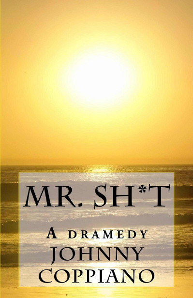

The dog is in the photo to try and persuade you to like him that much more. We know, he's a marketing genius.
Johnny Coppiano is a twenty-something-year-old writer living in Los Angeles, CA. Originally born in Coral Springs, FL, his family took root in Georgia, where he attended Georgia Southern University for three years before moving back into the North Georgia area to pursue a career in entertainment.
During this time period, he became an online media writer, gaining small traction on the web by writing content with over 4 Million reads. In December 2016, Johnny published his first Novel, Mr. Sh*t, and moved out to California.
When he's not writing, you can find him at dimly lit watering holes drinking old fashions.
Interested in working with him or want him to make your ideas into a tangible script or novel? Click here!
Mr. Sh*t
Now Available for Pre-order!
Digital & Paperback available Jan 1st, 2017
Releasing on Amazon, Barnes & Noble, BAM!, & more!
Meet Greyson Dump, America's youngest talkshow host. Join him and his sidekick, Uber, on their ridiculous, booze-soaked misadventures away from the spotlight. Will Greyson ever get back into Hollywood's good graces?
Mr. Sh*t is a novel poised at creating a discussion on millennial depression, substance abuse, and "offensive" language.
Read the first three unedited chapters below!

I whisper in her ear, “See, this is where the magic ends. Your temper is ridiculous,” and look back at my phone.
She rolls her eyes and leaves the table.
Just before the Los Angeles sunset swallows her, the girl turns around holding the restaurant door and yells...
From time to time I write aimless stories or do charity pieces, both equally as shitty. So if you're looking to waste some time, you've come to the right place!
Disclaimer: I write most of these intoxicated or on the whim so don't expect to find an edited masterpiece. They're just for fun.
Legal: Especially on true stories, let me know if anything needs to be changed or removed: Jonathancoppiano@gmail.com
Notice: 01/05/16: A lot of my original works are now owned by another company and were removed for relative copyright reasons. I will update you all when they are released under a particular medium.
Mr. Sh*t, a dramedy [Manuscript, Parts 1-3]
By
Johnny Coppiano
Edited by: [edition not edited]
NDA: Digital Edition Manuscript Release
[legal content removed]
Quick Summary, from [removed]
[summary removed]
1. Fuck
I whisper in her ear, “See this is where the magic ends. Your temper is ridiculous,” and look back at my phone.
She rolls her eyes and leaves the table. Just before the Los Angeles sunset swallows her, the girl turns around holding the restaurant door and yells, “…and I fucked Matt, too. Some friend he is!”
‘Some friend he is...’ …is she actually judging the overall character of a person she cheated on her boyfriend with? More than likely I’ll feel something later, but no true emotion arises. I just wear a fake grin as she leaves the restaurant.
Looking at the nervous waiter, I laugh, “Well, I'm sleeping on the couch tonight! Check, please!”
A couple customers throw some pity laughs into the atmosphere and the band finally goes back to playing. The awkward silence is swallowed into the music.
I need to get the hell out of here.
“Here is your tab, sir.” He hands me the booklet, but I don’t open it. I assume that putting two ‘benjamins’ down should suffice considering we didn’t even make it to the meal.
I’m out on the sidewalk in seconds. The dry California air stands still only to be disturbed by the automobiles cruising along the pavement. In the corner, there’s a woman selling flowers with crusted sand stuck in her hair. I’m grossed out, but there’s no one else around so I just start the interaction.
I ask, “Hey, how are you?”
In a thick, indistinguishable Ukrainian accent she goes, “Yis. Am Good! Sale, today! Sex dollars for the dozen.”
With a smile I hand her the engagement ring that’s been sitting in my suit pocket for the past couple hours.
I say, “Oh, don’t worry, I’m not asking you to marry me. It’s worth around fifteen grand.”
The girl gets distressed and screams, “Vhat?”
“It’s a gift. Just take it. Pawn it, hell, you can even wear it around and pretend that you’re living every female white wedding wet-dream. Well, I guess girls don’t have wet dreams. Or do ya’ll?”
We stare at each other awkwardly because, apparently, humor isn’t a universal language. I decide to clarify, “That was rhetorical.”
Flower girl raises the case into the air and opens it. The light slips into the gem and explodes into a mini super nova of colors. She looks at me and cheers, “Vhat are you? An angel?”
“Nope… I’m fucked.”
2. Shit
I’m thumbing through my phone while taking my morning dump. Steve Jobs single-handedly increased my toilet time by around twenty minutes. Ben, my old college roommate, is snapchatting pictures of this passed out obese man sitting across from him in a waffle house. The caption reads: ‘when hash browns have you like.’
Personally, I relate to the fat ass in a spiritual way. Here I am hungover, with a terrible case of D.A.D.S, still drinking out of the whiskey bottle resting on the restroom floor. This is the lowest point of my life, and let me tell you, I have been in some fucked up situations.
I thumb down on ifitisntleslie’s snapchat story just to find a picture of her cat captioned by the feline emoji. “ifitisntleslie” is no other than, Leslie, this girl I banged at my fraternity social years ago. Goddamn is she hot. Yet, and I feel a lot of guys go through this, she never uploads any sexy pictures. So why the hell do I keep her as a friend on Snapchat? Oh yeah, because she’s hot! It’s this never ending system of hoping that one day you’ll be lucky enough to catch a sexy drunk snap. But, let’s face it, the only pussy pics I’m getting is of a literal cat.
Anyways, I’m late for work.
I flush the toilet, force myself to another whiskey sip, and dart into the garage. This is where the following realizations blossom:
My car isn’t in the garage
Absolutely no recollection of the location of the automobile
I can’t remember the last time I’ve eaten
Totally forgot to wash my hands
“SHIT!”
Thank god for Uber. Surprisingly, there’s only a five minute wait time which is fantastic because now I have five minutes to drink more.
Not entirely sure how my life came to the point where I have to walk upstairs to a bathroom to get my whiskey bottle, but maybe that’s just the modern American twenty-four year old.
After a couple shots, my phone rings. It’s Matt. He’s been calling me nonstop since the news went around that, not only am I recently single, but I know that he’s the one Olivia was cheating on me with.
I answer, “Hey, Douchebag.”
He goes, “Look, I know you and I have had our differences recently, but we need to put all of that aside. We used to be good friends, you know.”
“Differences? If by that you mean you’re an absolute douche canoe and I’m a soaring champion… then yeah we have our differences.”
“Calm down, Greyson. I am calling because you’re late and I need to make sure that you are not coming into the studio drunk, again.”
“Define drunk.”
“You’re on thin ice, bud. This is a professional environment and there are little to no places on the planet where you can show up to work inebriated and as your boss I’m begging you to get your shit together.”
A random number flashes on the screen. I’m guessing that’s my ride.
“My Uber is here. I’ll see you in thirty. Please, die before I get there.”
I hang up and somehow make it outside. The driver opens the door for me and goes, “Hey, I know you from somewhere!”
“Oh, yeah?” I sit down. The conversation pauses momentarily while he journeys back into the driver seat.
It hits him like a brick, “YOU’RE GREYSON DUMP! LIKE FROM THE TV SHOW!”
“…but to you, my young friend, call me Mr. Shit.”
“Oh, why yes, of course. Can I please get a picture? It’d mean the world to me.”
An idea overcomes me. I might as well be a charity.
“How about I give you a job. A driving job. You can quit Uber and be my own personal bitch for a while. I can’t recall what happened to my car after last night and I’m not going to be sober enough to find it for a while.”
We turn into Beverly Boulevard and his eyes widen. He can barely breathe as he accepts my amazing offer, “Okay. I mean, thank you. Thank you for the amazing opportunity. I accept, obviously.”
“Alright, cool…” I hand him my card with my pre-written personal number on it, “…be back here around seven, but I am probably not going to be on time because nothing matters and life is a joke.”
His grin is actually eating his entire face. There’s no way that the person about to drop me off is the same human being that opened the door for me half an hour before.
We stop at the studio gate and he rolls down the window for the guard, but doesn’t say anything. He’s stupefied and completely unable to speak on an adult level. Fuck, I broke this kid.
I announce to the guard, “He’s with me. I’ll just get out here.”
Just before I leave, I hand him whatever cash I have in my wallet. He holds it in his hand not moving and still not saying shit.
Finally, he goes, “Mr. Dump… I mean… Mr. Shit, you’re amazing. Your life is amazing. Thank you.”
I respond, “Nope, my life is shit,” and walk out of the car.
3. Cunt
Rachel throws back her hair in order to see the view clearer. The Georgia moonlight begins to give way to the routine, golden birth of the sunrise starting to outline the Tybee beach horizon. None of that matters, though, because I’m looking at her. She is the prettiest thing I have ever seen. Women often think that you’re enjoying the view with them, but the truth is that the real beauty of anything is watching the occasion make her happy.
She starts to take pictures of us with her phone given the little light that is now available. I’m happy that I was born at an appropriate point in the human timeline where I could be present in these photos with her. You know, every so often someone will take a picture and it’ll turn out to be more than just a damn picture. It’s a work of art that somehow was given the honor to capture everything about that moment during that particular day and age. I mean, I’ll look at this picture and know that in decades I’ll just glimpse for a second and will immediately rekindle the sounds and language it speaks because I fucking felt alive during that moment. I say that because we are lifeless beings until something or someone breathes us into life. That feeling lasts only as long as a moment… so like an old friend I’ll welcome that memory into my heart every time.
We lay down in the sand and scroll through the hundreds of pictures she took. That’s when I see this picture. The single image that I know will always keep this morning alive. Contrary to popular belief about millennial females, I know she’ll never put it online. This girl never looks for validation of any kind. These pictures were for herself and it’s a beautiful kind of selfishness. There is no need to throw them on social media because her gears don’t spin that way. So, when I say she’s an old soul… I mean it.
Rachel hands me her phone and goes, “Send yourself whichever ones you want.”
“I want this one.”
She laughs, “Why?”
“It’s everything.”
We kiss wildly and help each other out of our bathing suits. It’s just dark enough still where we can totally get away with fucking again. Without hesitation, she goes down on me and--
Something wet and ridiculously cold runs down my back. I am infuriated and lash out of my slumber.
I yell, “What the fuck?”
Someone replies, “Greyson!”
Opening my eyes, I see that it’s my Agent standing over me with a pitcher of water.
“Are you fucking serious Donavan? How did you get into my house, you fucking dike!”
I’m so hungover that I have to remind myself who this human being is. Donavan… is my born again she-male shark of an agent and interim mother. Yep, that’s right! Nailed it.
She slaps me and goes, “Call me a dike again and I’ll castrate you with a spoon. How did I get in? Your door was wide open. You should be glad you weren’t robbed.”
Sitting up, I look around. My house is trashed and I probably smell like ass.
I need help getting on my feet. She dusts me off and asks, “What is going on with you, babe? Look at the pig-pen you’re living in. I don’t know how you turn a three million dollar house into a Goodwill, but you accomplished it you skinny fuck! Here, eat something.”
The girl hands me a burger and I devour it while chugging water right out of the pitcher she was wielding.
“Shit. Dona, I’m sorry about calling you a Dike.”
She sighs, “No problem, sweetie. Come, sit. We have some good news and bad news… and by good news, I mean, they found your car… and by bad news, I mean, they found your car.”
We sit down at the dining table and shove aside the liquor bottles and empty Dorito bags.
I go, “I’m in trouble, aren’t I?”
“Greyson, your car is in impound because you left it with the keys in the ignition after crashing into a parked car in Venice. You’re going to be charged with a hit and run amongst other possibilities.”
“Fuck. What should I do?”
“Turn yourself in. Play the whole, ‘We all make mistakes and I’m sorry America,’ bullshit.”
“Really? That’s it?”
“The thing is… your license is going to be suspended and you’re almost definitely going to face probation. There may be jail time, but we can possibly settle. It just depends on the owner of the vehicle you hit. We need to get you a Lawyer.”
“Okay. Well, fuck. Fuck!”
My doorbell rings and the Uber kid I hired is standing in my open doorway. He goes, “Hey Mr. Shit! I’m here to pick you up.”
Dona barks, “Who is that?”
Before the kid can respond, I go, “That’s my driver, uh, Uber.”
Her expression changes into all out confusion and she asks, “This kid’s name is… Uber?”
I smirk, “Yes.”
Uber goes, “I am whoever you want me to be, sir.”
“See? What a pal! Uber, I have to be somewhere. Let’s go. Dona come with, obviously.”
He asks, “Are we going to the airport, still?”
“When did I ever say I wanted to go to the airport?”
“Oh, um. After your show, you told me to pick you up today around two so you could, and I quote, ‘get the hell out of here.’”
Uber nervously exchanged eye contact between Dona and me. She breaks the silence, “Well, right now we need to go to the L.A.P.D.”
I walk towards the car and open the door for myself and get in.
He asks, “What? Why?”
Dona follows me into the car and responds, “He needs to turn himself in.”
The kid doesn’t ask any more questions and just silently walks into the vehicle and starts it up. At first, no one says anything and no music plays as we cruise along the dehydrated 101 out of Beverly Hills. I roll my window down and rest my head in the wind. Closing my eyes, I remember my dream of Tybee. For a second, I’m there. I accept my ultimate need to be happy and sigh. Is it normal for people to relive memories in their dreams?
Then, it hits me. I don’t have that picture anymore. The perfect picture of us. Shit, that photo was at least four iPhones ago.
I slide my phone out of my suit pocket and thumb to Facebook. In the search bar, I type in: Rachel Caunt, and start skimming through her photos hysterically.
Dona notices me frantically looking at my phone and the curiosity is too much. After a couple glances, she asks, “Who is Rachel?”
We make eye contact, but just for a second. My facial expression is enough to give it away.
She goes, “You slut! How do you pronounce her last name? It looks like you’d pronounce it like, I don’t know, ‘Cunt?’”
I laugh violently, “I know, we used to give her shit for it all the time.”
Looking back down at my phone, I mentally confirm that Rachel never put it online. Damn, I knew she never would.
Dona’s face races to her seemingly natural, concerned momma bear look, and goes, “That’s the first time I’ve seen you laugh like that in years.”
She takes her muscular wingspan and pulls me into her shoulder.
“Oh, and Greyson…”
“Yeah?”
“…Happy Birthday, you cunt.”
Normal, The Routine
I don't usually write serious shit. More than likely you read my stuff because it's funny or you want to judge me. (and in one interesting case, because someone thought it was my journey to sobreity.......) If you're looking for a laugh, this piece isn't funny. You've been warned. Why did I post this? 'Cause a bulk of what I've written over the years isn't owned by me anymore. I thought I'd just post something to keep the content rolling, mothafuckaa.
A short by Johnny Coppiano 1-27-2016
And we hate ourselves, because there’s a comfort in burning dreams. You’ll say, “Oh, well. We tried.” So in the decades until our youth smokes from the ash, we’ll fit in with everyone else who let their adolescent wishes go up in flames. Your offspring will look for guidance on how to break free from the centuries of generational routine, but you’ll steer them away into the comforts of being normal. And they will hate themselves, because there’s a comfort in burning dreams. They’ll say, “Oh, well. We tried.” So in the decades until their youth smokes from the ash, they’ll fit in with everyone else who let their adolescent wishes go up in flames. Their offspring will look for guidance on how to break free from the centuries of generational routine, but they’ll steer them away into the comforts of being normal. And they will hate themselves, because there’s a comfort in burning dreams.
An unfortunate soul rises from the aged gears of time and endless framework. Humanity’s timeline has been absolute clockwork. His earthly burden is always in his words and hope. He’ll say, “I’ll never stop trying.” So in the decades until his youth smokes from the ash, he’ll be scorned and ridiculed because there’s a discomfort in keeping your wishes from the fire. His offspring will look for guidance on how to break free from the centuries of generational routine and he’ll steer them away from the comforts of being normal. And they will love themselves, because there’s a discomfort in chasing your dreams. They’ll say, “I’ll never stop trying.” So in the decades until their youth smokes from the ash, they’ll gracefully never fit in with those who let their adolescent wishes go up in flames. These unfortunate souls will plague this earth and change will strangle the life out of comfort. Bravery and intelligence will be esteemed over the lazy and disinterested. Who is this unfortunate soul? This being is you. Be the broken gear that ends our plagued infinite.
That Time We Got Kicked Out of an Athens Strip Club
Fall 2015
Characters: Pam, Laina, Nicole, Pam’s sister (acronymed, "P's S"), John (Highschool), Moco, Webber, Sarah
Extras: Topper’s Strippers, Moco’s sorority sisters, bathroom bro 1, The Topper’s Manager, Pam’s sister’s friend
Mention(s): Jace
Alcohol Spots: Yeungling Beer, Maker's 46, & [Removed]
This happened so recently that it doesn’t need a backstory… All you need to know is that we are heading to Athens for Moco’s birthday party and that I am amazing.
If you want to avoid the introspective bullshit that no one really cares about then skip all text in this shade of red, because it does not really pertain to the story nor will it be funny.
As with all my true stories, I use first names or nicknames as per request. If anything needs to be changed, please let me know. jonathancoppiano@gmail.com Also, please stop emailing me about grammar issues. These life misadventures are for fun and I rarely run them by my editor because they don’t matter. At least not yet. CHURCH. (Yeah, I’m bringing it back.)
I’m forced to ride in the back seat of Pam’s CR-Vag during the three hour ride from Statesboro to Athens. This would be fine if in order to get to Athens you didn’t have to slink through the intestines of pointless GA country side where they just discovered fire like three days ago. Imagine this: You start making a little-tiny bit of money from writing and you decide to cash out on a new pair of beats. Armed with the recently released Apple Music service, you start jamming away while ignoring your friends and get lost in your own happy world. Bamn. You hit a dead zone. No fucking cell phone service, no music streaming, no GPS… nothing. I’m pissed so I take my headphones off and welcome myself back to the 20th century where I might actually have to hold a conversation during a car ride.
Pam responds back to Laina over a Taylor Swift song blasting, “Taylor Swift is so lucky. Can you imagine what it’d be like to be THAT famous?”
She momentarily takes her gaze off the road to make eye contact with Laina as she responds, “I know, but what’s crazier is that she is one of us… you know?”
The conversation repulses me. I internally contemplate if I’d die instantly from just jumping out of the car at this speed. Probably not worth it because with my bad karma I’d survive and be fed through a tube for the rest of my life.
I go, “Do you guys have service? INEEDserviceNOW.”
They both ignore me and finish talking about the all powerful Taylor Swift and her effect on relatively recent business conflicts involving Spotify.
Pam grabs her phone suddenly and says, “Wait…”
“Yeah?”
“Did you say we’re out of service?”
“Yes.”
“Ok because I had my GPS set and then I took it off to save data and now I don’t think I can get it back up since we have no internet!”
Oh my God…
“Pam! Why would you do that?? Now we’re flying blind!”
There’s been a lot of miracles in my life, but the fact we somehow eventually checked into cell service again just in time to keep ourselves track is mind blowing. Not saying we ever went off course or anything, but that’s easily the worst case scenario. Could you imagine getting lost in rural Georgia? At night? That’s the start to every small budget horror movie.
With our service back up, I reopen my music playlist, “tight butthole,” and start streaming again. I am content. A notification pops up and it’s my ex, Nicole, wondering when I’m getting in town. I’m nervous because not a lot of people know we are still talking and to be honest… I don’t even know if we are talking, but I’m staying at her place so I guess we are?
Who cares.
I don’t need to hear the dangers of ex significant others. If you’ve read my previous stories or know me then you know my history with Nicole is a never ending soap opera. If Nicolas Sparks ever made a TV show that ABC Family said had to go on for, at least, a decade… That show would be about us.
Point is, I never get into the details of any female partnership because whatever/whoever makes me happy is good enough for me. Besides, ultimately nothing matters.
I thumb in, “Maybe around 5?”
She almost instantly sends back, “ok.” Which is Nicole language for, “I thought you were going to be here earlier.”
Yeah, we were, but shit happens.
Long story short: we left late and I don’t feel like typing all that out.
Pam goes, “Johnny, who are you staying with tonight? Webber or Nicole?”
“Uh, I don’t know yet.”
I do know, I just don’t know how to say it without getting the ex-girlfriend lecture I so desperately hate.
I know I just said that I wouldn’t get into the details, but fuck it. (haha butt fuck it.)
The honest truth is that for the past couple months I’ve been around. Not specifically in that super male slut way or as others would describe as my freshmen year or SummerJohnny, but in a socialite type of way. The girls I started talking to in Statesboro all mean well, but they are so caught up with asinine life pursuits and wield unstable personalities that I can’t distinguish them from alcoholic robots. People ACTUALLY come here to get an M.R.S degree. If you don't know what that is, then you haven’t dated in the south. When they are absolutely shit faced, I can’t believe how open and honest some of these girls were. I actually might have mistaken them for genuine human beings with complex never ending staircases of personal depth. Yet, when I’d try and have a spirited conversation sober… it’s describable in a single word… fake. Take it from me, if you can’t connect with someone sober then it won’t ever work out. Now, on the hookup aspect of it all these girls are wonderful, fun, rebellious creatures. I’m just not into that anymore. I have been pissed on (it’s a long story), dragged into drama, and been in love triangles all too much to deal with that scene ever again. It’s insane and no one should live like that. Especially, through it all, the only person I was thinking about was her. I didn’t mean to compare everyone to Nicole, but I did. In the same way that I travel sometimes and compare the US to every destination. Nothing out there even remotely collates to home and there’s no place else I’d want to live.
All of that being said, it would be 100% wrong to generalize the entire population under that paragraph long description, especially the ENTIRE crazily ambitious greek life community, but it’s just the truth from that singular test population in my conclusion. (That’s a chemistry lab joke)
Nicole is an insane combination of fun and intelligence that it is literally confusing. On one end she will party till sunrise with me, and on the other, she’s ambitious enough to make it into fucking Pharmacy School at one of the most respected institutions in America. The. Most. Attractive. Thing. Ever. is a girl that actually follows through with her dreams. I met her freshmen year and she said, “I want to be a pharmacist,” and in the Spring she announced, “I’m going to [University Removed] Pharmacy school,” and that, right there, is the type of person you want to be around. A winner.
Pam replies, “Ok, well we are going straight to [my sister’s] place so have them pick you up there.”
We exchange the address for my pick up location and I immediately send it to Nicole without a thought.
I go, “Have I met your sister before?”
She erupts, “YES! JOHNNY! You have definitely met her.”
I decide that she’s probably right so I dive into my memory a little bit. Oh wait, she’s the vegetarian!
“Oh! She’s the vegetarian, right?”
“Yes, she’s vegetarian. Don’t bring that up though. I’m warning you. She is sensitive about it.”
“Sensitive about being a vegetarian?”
“…”
“Like are you warning me because you think I’m going to make fun of her or something?”
I’m not that guy to question someone’s beliefs, at all, but now I’m intrigued.
“Johnny, I’m warning you. Don’t bring that up.”
“Why? Will she be at dinner?”
“…Yes.”
“Okay, I promise.” Fingers crossed.
We finally pull into [Pam’s sister’s] dormitory, which is huge. I mean, everything at UGA is unreasonably giant. The entire car is emptied as we grab our things and I’m just about to leave before I remember I brought my hunting knife with me for some reason. (I was drunk the night before and packed my bag in said condition.)
“Johnny! Hurry up!” yells Pam.
I cut my losses and toss my knife onto the floor board before following them into the building. (Last pun, I swear.)
I’m not trying to get arrested or anything, especially over a stupid knife I unreasonably bought at a gas station when I was high months ago. Plus, why did I even pack a knife? I swear I need to stop drunkenly packing my shit the night before. I actually opened my bag in class one time and found a couple beers, a snorkel, and a binder WHICH WAS EMPTY. I had nothing actually proactive in my backpack that day, but I HAD A SNORKEL.
I’m wondering if I have any more surprises in my sack when Nicole texts me, “I’m on my way.”
Ok, that’s awesome. I don’t have to deal with a dorm room full of girls for long.
Here’s the thing about [University removed] dorms: Unlike everything else the university builds, their dorms are prison cells typically served with community bathrooms. So not only do I secretly have to shit, I have to deal with the congestion of five people in a microscopic living space while maintaining a conversation with two people I don’t know really well.
Turns out, they were actually really cool.
We get inside [Pam’s sister’s] dorm and we all greet each other.
[P’s S] goes, “Hey Johnny!”
Fuck, she knows my name. We have met before and I am a horrible person.
“Hey girl!”
I definitely don’t remember her, at all. We met years ago at my fraternity party, but I have not retained any imagery of her. And here is the proof: I was shocked at how pretty she was to the extent that I was mind-blown because I’d remember someone that good looking.
HA! Who am I kidding, I forgot I put a snorkel in my backpack. Let’s be real.
We hug and I turn to introduce myself to her roommate. Just by the way she acts, I can tell she’s probably a pretty chill person.
The conversation between all of us was super fun, at first. I learn several things:
[P’s S] is a total ‘nola who is sorority-level good looking, I am confused and pleased that the world forever challenges stereotypes
Both of them rushed, but only [P’s S’s] friend ended up pledging
[P’s S] probably has some level of social anxiety, but I don’t care enough to understand why.
I’m really fucking hungry at this point.
So what sucked? I started to be questioned about my promiscuous behavior over the past few months.
[P’s S] asks, “JOHNNY! ARE YOU LEADING GIRLS ON? ARE YOU LEADING NICOLE ON?” she continues, “DON’T BE THAT GUY!”
I want to tell everyone that I’m crazy about Nicole and that I want everything to work out, but I’m a coward and just smirk. WHICH makes me look like a douche, but I still wanted to avoid Pam giving me any sort of lecture.
“Look, guys, I’m just being Johnny. She knows what she’s getting into.”
Wow, now I look like even more douche-tastic. I might as well be wearing a flat bill and change my name to J-town.
Yet, they all laugh and look satisfied by my explanation. Almost as if saying my name as an excuse alleviates me of any guilt. I don’t buy it though, because it’s not true. I’m not sure I know what I’M getting into.
It dawns on me that even though I’m playing it carefree, Nicole might be dating around. Which is totally awesome, but by being the “cool” guy I’m not getting any closer to a stable relationship with her… and that’s what I really truly want. I know everything I do/say goes around the grape vine and gets back to her.
I decide right then that I’m going to stop acting like I’m above the situation and just say what I actually feel when the opportunity arrises instead of acting like IDGAF.
I generally don’t care about anything, but damn I guess I’m starting to.
While I’m waiting for Nicole to park, I look around [P’s S’s] dorm and remember years ago that my high school ex-girlfriend had a room a lot like this one. The bright colors, the atmosphere of hope, and the ultimate naivety of what actually happens in college. It’s like i’m standing in a old movie set of my life where I used to date a girl that was a lot older than me and how much time I spent in a little room like this before I even got my HS diploma. I could see myself kissing her on the futon, arguing in the doorway, and ultimately lying to myself about the validity of our relationship.
Oh yeah, I forget, nothing matters so why am I being sentimental?
My phone buzzes and beams the text, “I’m here,” from Nicole. She comes upstairs for a few minutes to say hi to the crew and then we leave to her place over in river club.
[cut]
This is where I meet Nicole’s roommates, but that’s part of another story altogether so I’m leaving this section out and cutting to when we all meet up again for MoCo's birthday dinner. You’ll learn all about them and generally hilarious events in “I partied a lot with nerds this semester, judge me.”
[cut]
Side note: Before we all meet up, I get a call from Pam about the knife. They are all in the car FREAKING out over the fact that there is a hunting knife sitting on the floorboard. I could NOT stop laughing. My favorite comment was, “WAS JOHNNY TRYING TO KILL US?” I never thought of the ramifications of leaving a random weapon on the floor of Pam’s car without telling anyone. That’s hilarious. I can’t imagine going into your automobile and finding something so random and terrifying like that. My bad, guys.
It’s me, Nicole, Moco, Moco’s friends, Pam, and [P’s S] at this super foodie bistro. (Laina was dropped off at her brother’s for the night) You know, one of those places where you go to have a $10 salad surrounded by other similar personalities who think that’s acceptable. I’m one of those personalities. I have very expensive taste so I immediately take a liking to the place. I already LOVE Moco, but this is another reason to love the girl, what a great decision! I love this choice for a birthday dinner… not because of the food, but because places like this have the top-shelf whiskey I love. Yeah, I’m that guy that goes to a restaurant solely because of their bottle selection. What-up.
The way we all take our seats is so aimless that I end up sitting across of [P’s S] instead of Nicole. I shoot a look over to Nicole and she doesn’t look like she cares at all, oh well.
[P’s S] is looking across the menu the same way you try and find an answer in your textbook.
Then, it hits me… she’s vegetarian trying to find the appropriate dish.
I look over to see if Pam is looking at me and she matches my eye contact, fuck. She knows what topic I’m about to start a conversation over.
The server takes everyone’s drink orders and then comes to me.
“Sir, what do you want to drink?”
I decide not to touch the shelf ceiling and get something affordable.
“Double Maker’s 46, on the rocks.”
Everyone looks at me like I’m a fucking alcoholic. As they should.
“Just the whiskey?”
I nod and look over at [P’s S] who is still scanning the menu. I ask, “…so what’s the difference between being a vegan and being a vegetarian?”
Pam glares at me and I try not to laugh.
What I get as a response is so in depth that I actually lose sight of the fact that she’s my best friend’s little sister and I almost want to call her by her actual name. (I have been calling her 'Pam's Sister' since we met.) No really, she didn’t come across snooty or immature or even looked down at me for ordering a burger. A very well collected person and that just goes to show how awesome everyone in Pam’s family is. Then, I realized I can’t treat her any differently from how I treat all my friend’s younger siblings… no matter how cool she is.
“Oh, that’s awesome, well I’m a vegetable rights activist,” Nicole rolls her eyes at me as I continue, “and I think we need to stop the way we slaughter innocent vegetation.”
I can’t break this girl. She just jokes along with me as if she is immune to my amazingness. FUCK.
Dinner ends and we all head out to Moco’s sorority sister’s apartment for the party. This place is absolutely fucking amazing. It sits on top of downtown. The view is to die for and probably perches on one of the best pregame locations I have ever been to in Athens.
As the party fills up, I convince my two close friends Webber and John to join me. I need to make a spectacle because I am slowly realizing I am the ONLY male at this occasion. Literally at some point there was just me and twenty girls. I need more troops for my manhood to survive.
I twist open my handle of whiskey and start drinking it straight from the bottle because I’m only good at beer pong when I’m drunk. Nicole and I start playing and lose so quickly I'm leaving the entire game out of this story. I’m that embarrassed.
“See! I told you I’m only good when I’m drunk.”
She looks concerned and goes, “Baby, Please make it to tonight.”
Who does she think I am? I’m fucking Johnny Coppiano. Nothing will stop me from conquering Athens, tonight.
John calls me to let him in the party. The moment we meet the smell of cheap rum hits my nostrils and I know that John and I are on the same page.
I yell, “JOHN!” as I hug the bastard. I escort him into the party where everyone stares at us. I realized that we were already the drunkest one’s there. I smile.
John asks, “Do you want to do shots?”
I search the kitchen for shot glasses and pretty much just give up, “Sorry man, I can’t find any.”
John pours a blind amount of rum into two solo cups and hands me one.
“Fuck it.”
We literally chug straight rum and use each other’s presence as a type of mental support system to avoid puking.
Both of us scream in success.
Webber calls me to let him in. Now it’s full speed ahead. I greet Webber and his girlfriend, Sarah, into the party. We are all quickly immersed into this blissful atmosphere of alcoholic debauchery. Shots, pulls, and beer never went down so easy. I think a big part of it was that I genuinely love partying with Moco. Everytime I see her walking past me I sort of get this high pitched voice and go, “Hell Yeah Birthday Girl!”
Now, I can’t exactly tell you how this happened, but the three of us bros find ourselves in the upstairs bathroom. I remember this article I read on the internet that said if you snort alcohol, you get drunk quicker. Remember I'm already drunk, ok?
“Let’s snort this.”
I pour liquor all over this random girl’s bathroom sink and snort it with Webber and John. We start yelling and cursing, probably super audibly, for awhile. It hurt so fucking bad. I can’t say if it worked or not, but we were stumbling down the stairs back into the living room.
John and I notice that most of the population has moved into this bedroom with an open door so we walk on in.
Inside, there is a bunch of Moco’s sorority sisters sitting everywhere. I joke, “What are you girls doing, talking about boys? How cute!” They do NOT find me funny, at all. I don’t even get a response. They just stare at John and I as if we were dirt. I have officially become a spectacle.
John and I wander back into the living room and sit down next to each other on the floor bordered around a coffee table.
This is where I start chugging my whiskey handle, religiously.
[P’s S] is sitting next to me and we start talking about our love lives. She tells me a little bit about her recent relationship and why it didn’t work out. I debate being real with her and getting into my life, but I can’t. I keep the dialogue in the other court, deciding that, if anything, I’ll learn a little bit about her.
My conclusion, she’s so much like Pam it’s scary. Yet, something is off. Not in a bad way, I just don’t understand her personality, entirely. The easiest way I can describe this: [P’s S] can be whoever she wants to be at anytime. As if she has a core personality, but it morphs to accommodate whoever she is talking to. In other words, she tolerates people automatically and it’s hard to tell her actual opinion of you by talking to her. I still have no idea if she hates me or sees me as a friend.
I end the conversation because tonight, and every night, is about alcohol… not about confusing young people. We become snapchat friends and I get up to rally everyone to head downtown.
Looking at John, I raise my bottle to him and we both chug. He eventually stops (probably because he is drinking fucking rum from a plastic bottle), but I don’t. I finish the entire 750mL whiskey bottle, albeit I had a lot of help, but I finished that fucker and slammed it on the table.
Yeah, I know.
The entire party crowd starts pouring out of the apartment. I get near my crew and we all walk out. As we cross the street, I visibly watch Nicole’s nonexistent sobriety. Nicole, a 21 year old, is being helped across the street like a blind old lady by [P’s S], an 18 year old. It was the funniest thing I had seen for awhile. Wait.. I wish I was helping Nicole cross the street! Why wasn’t I being more of a boyfriend-type!?
Oh yeah, It’s cause I’m helping John cross the street.
If you had seen us walk that asphalt, you would have thought it was the ending scene to a war movie. Those who could walk helped those that couldn’t. Pure comedy.
Luckily, we all make it into Magnolias. It’s a pretty famous bar in Athens and I’m excited to tear it up for the first time.
Webber and I grab some drinks at the bar. Nicole is nowhere to be found so I chug the cranberry vodka I got her and then sip on my beer scanning for any existence of her or John.
Then I see John’s silhouette from across the bar and it’s NOT good. The fucking guy throws a pool stick like a spear and then turns around as if nothing happened.
Oh, fuck.
A couple people point at him, but he just sips on a drink that I’m pretty sure he picked up from a random table. After chugging it, he runs off into the bar abyss… oh, no.
I frantically look over at Webber, but he’s gone, too.
Double fuck!
I’m getting anxious and it’s pissing me off because my drunk is affected by it. I decide to run off to the bathroom to piss in case I have to leave soon. Who knows, I mean the way things are going we may actually be asked to leave. My piss explodes out of me and hoses for awhile.
“BATHROOM PULLS!”
I look over and John is in the urinal next to me holding the plastic rum bottle he was drinking out of all night.
“JOHN ARE YOU INSANE? YOU CAN’T BRING THAT INTO A BAR!”
He is completely incoherent, “BATHROOM PULLS!”
“FUCK!”
I pull from the bottle while finishing my piss.
This random dude waddles in and John gets in his face, “BATHROOM PULLS!!!”
Without hesitation this total stranger chugs from the bottle and takes John’s place in the urinal.
“John! We have to be careful with that bottle, dude. I don’t want us to get in trouble.”
“FUCK YOU, PUSSY!”
He runs out of the bathroom and out of sight. I chase after him all the way to the end of the bar and lose him again.
Triple fuck!!!!!
These little hands tug on my shirt and it’s Nicole. No joke, her eye lids are almost all the way shut.
I ask, “Babe, you okay?”
She screams, “I AM DRUNK!”
I fucking love drunk Nicole. It does not happen often, but Nicole is one of the best people to party with. We start dancing in front of the entire bar population. Not giving a single fuck.
I keep tabs on John every few seconds, but of course everything explodes too quickly for me to do anything about it.
Sarah watches John knock a plethora of pool balls off the table and my eyes trace them as they roll EVERYWHERE.
Quadruple fuck!!!!!!
She walks up to Pam, who is already having a mini-panic attack with the amount of drunk people she is watching, and goes, “PAM! YOU NEED TO CONTROL YOUR FRIEND!”
Pam looks at John’s situation and says, “OH HELL NO, HE IS NOT MY FRIEND. HE IS WITH JOHNNY. I WANT NOTHING TO DO WITH HIM.” She then points to me and Sarah immediately confronts me about John.
“John is going to get kicked out, Johnny. Get him out of here, now!”
I consider just letting John get thrown on his ass, but I love the guy so I decide I’ll have his back no matter what happens tonight.
Within like five seconds, I grab John by the shoulder, and shout, “John we are leaving!”
He doesn’t refuse, but he says something hilarious, “Do you think Pam would fuck me? I think she would. I mean, I would fuck myself.”
Nicole, John, and me make it out of the bar into the Athens night life traffic. If you have been to Athens before, then you know how nuts the crowds get. Through all stress, we all make it back across the street and up the sidewalk. The three of us are so wasted that we have no idea where we are going nor do we have a plan.
In front of us, there is this neon sign radiating the popular strip club name, “Topper’s.” Nicole slurs something that very few men ever get to hear their girl’s say, “I wana to go to da strip club!”
I’m going to marry this girl, someday.
John gets super excited and RUNS inside just to be stopped by the entrance system.
The desk girl goes, “It’s five dollars! It’s five dollars to get in!”
He goes, “Yeah, whatever!” and basically throws his freaking cash at the lady. She STILL accepts the sale and ID’s him without giving any sort of attitude. I don’t know if they are used to such disrespect, but damn that was super chill of her.
Once inside, we lose John for a second. So Nicole and I decide to sit down in one of the few available seats in front of the main stage. I kiss Nicole on the cheek and get up to grab a beer. It’s so funny how mesmerized she is by these girls… she just stares in awe as they dance around.
One of them has these crazy awesome pierced nipples and she is paired with this tan chick who couldn’t be older than twenty. I’m serious.
At the bar, the chick asks, “What do you want?”
“A beer.”
The bartender looks annoyed.
“Oh shit, I’m so sorry. My bartender friend told me how much ya’ll hate it when someone is vague enough to say beer.”
She wipes her expression away with a smile and says, “It’s fine sweetie, what kind?”
“Yuengling!”
A stripper taps my shoulder and asks, “Hey cutie, what’s up?”
Now, awhile ago, my fraternity brother, Jace, was in New Orleans having the time of his life. The best part of his story was when he was drunkenly wandering around Bourbon St. and yelled at a stripper, “Where is your father?!”
So… guess what I said to her face.
In a British accent I scream, “WHERE IS YOUR FATHER????”
The girl fucking laughs and walks away. At least she knew I was just joking around and didn’t get me kicked out or anything.
I happily grab my beer and head back to my seat. As I’m walking back, I see this dude with a PDA staring at Nicole, but I don’t think much of it.
Nicole gets up, kisses me, lets me sit down and places her cute ass in my lap. The PDA dude walks over to us and gets in Nicole’s face.
He goes, “Hey, did you clock in?”
HAHAHA
I cut him off, “DO YOU THINK SHE’S A STRIPPER??”
He shakes his head and retreats before I can make fun of him anymore. Nicole and I can’t stop laughing. I am so happy, drunk, and thrilled to be alive. Furthermore, I think Nicole is just as happy as I am… which makes me even more exuberant.
Nicole goes, “Is that John?”
Right in front of the stage, John has cash in his mouth and makes the strippers interact with him on those terms. It is unbelievably hilarious. This girl bends over and uses her mouth to take the bills out of his. John goes nuts he bends over to put his face in her tits and then… it happens.
As he bends over, his rum bottle fucking falls out. Everyone around just stares at the male ass which seemingly gave birth to a misdemeanor.
A tall, muscular guy grabs the bottle and then John. They get in a very visual altercation. As it turns out, this guy is the fucking manager.
The manager pulls John’s wallet out and continues to verbally attack him. The fight or flight instinct erupts in John.
He chooses flight!
John grabs his wallet out of the manager’s hands and sprints toward us while screaming, “WE NEED TO GO!”
The three of us run the fuck out of the strip club without lookingn back and into the street successfully evading any further argumentative situation.
Character Update: 11/15/15
Johnny (Yours Truly): As far as that night goes, I left my debit card at the strip club bar because we had to GTFO, but because I’m lucky as hell, I was able to get it back the next day which was on a freaking Sunday! Pure luck that a couple strippers were cleaning up inside! Even better luck that none of them recognized me from the night before.
Currently, I’m a comedy writer for therichest.com and I’m getting ready for the launch of my book, The Drunken Adventures of Nicolas McDangle, in less than year. I still spend most of my time drinking, writing, and being a total idiot.
Pam: That night, Pam was the mother of all her friends. Her misery didn’t just end there. She stepped on a beer bottle and split her foot open getting blood all over the bar. The poor girl luckily survived and is completing her final year at Georgia Southern in the Spring. We’re still best friends, surprisingly. Not many people can put up with me.
Nicole: Both of us love this night so much. It was insane and that’s how we want to remember college. We’re officially dating, again. I’m in love with her, blah blah, you get it.
Pam’s Sister ([P's S]): I’m pretty sure she hates me. Then again, I can never tell, but if she does I totally don't blame her. I'm an asshole. She’s completing her first year at UGA living the life of a champion. If you ever read this i'll start using your first name in stories because I think you've earned it. Just let me know.
Laina: She is amazing, plain and simple. We haven’t had a crazy night together in awhile, but that’s probably because she’s actually trying to be a doctor. There is one night where she picked me up while I was mid-blackout from my fraternity house a couple months after this story occurred. I’m finishing writing about it. Get ready.
Moco: Other then being a sorority champion, the life and romance of Moco is unknown to me. We haven’t had a crazy night together in awhile, but hopefully soon.
John (highschool): John and I are still really close friends. We’re collaborating a pilot about the multitude of college experiences that we’ve had together. He resides in Buckhead, GA where he continues to do all the same shit I do, except he is somehow getting a CPA and a finance degree from State. Or as he says, “I’m just getting a CPA for funsies.”
Webber & Sarah: Webber, my childhood friend from Cumming, is still dating Sarah. They’re probably getting married, no joke. Webber and Sarah still go out with me despite the fact that every time they do... I drag them into some crazy debauchery.
Johnny Goes to Athens, Ends Up Gay for the Night
Summer 2013
We’re sitting at my buddy’s new place in Athens. It’s a couple weekends before school starts back up and I’m visiting some friends because I had nothing better to do. Plus, Summer of 2013 was basically an informal prohibition at the Coppiano household. My mom randomly decides to dislike my drinking habits and back when I was 18, she absolutely fucking hated me drinking around the house. So, essentially, I’m eager to take any chance I can get to get shit faced.
I look over at my buddy who’s already put a sizable dent in his bourbon and ask, “When are we heading down town?”
The guy doesn’t answer me. He just nods his head and starts walking towards the door while downing the rest of his drink. The five of us automatically do the same thing and follow him into the parking lot where we make the mile journey to the bars.
This kid I don’t really know that well asks for the fifth time, “They don’t have a cover, right? Or do they?”
I decide to be as polite as possible, “You’re a fucking idiot.”
We spend literally fifteen minutes shit talking to this kid’s face. I mean, it was brutal, but I think he’s too dumb to understand that we’re being serious because he doesn’t get offended or anything… he just laughs along with us.
“…and that’s why part of me dies every time you open your mouth,” and with that I conclude the public roast of this dude. My phone buzzes and I get a text from my childhood friend, Kelsey.
She goes, “I wish I was in Athens, tonight! Have fun! Take shots for me!”
Well, now I guess I have to get shit faced.
I announce, “First round is on me, guys.”
Everyone commends me and we finally gather in line at our first and last stop of the night. There weren't a lot of places where we all felt comfortable using our fakes so barhopping was out of the question. Ah, 18 in 2013... those were the days.
I’m in line for maybe five minutes before the following altercation happens. There’s this guy who’s already drunk and sweating like a pig in front of me. To make things worse, he reaks like straight BO and the smell keeps coming around every couple seconds. It's nauseating. Well, he’s trying to get this girl’s attention by pulling on her hair. She keeps turning around and asking him to stop.
The fucker asks, “No, hey, do you. Are you. Are you in my physics class?”
She looks at him, disgusted, half yells, “No! We don’t know each other,” and then turns around completely so her back is facing him.
Pig fuck pulls on her hair, AGAIN, and says, “We have to know each other. You’re. You’re in my physics class.”
The chick doesn’t turn around this time and he reaches out to grab her hair one more time. So, I’m not a chivalrous guy, at all, but I explode. I push the guy out of line and say, “hey man, cut that out, it’s fucking weird.”
The girl turns around and gives me this look that makes me feel like the bad guy. I mean, shit, the last time I got that look from a girl was when my mom realized I microwaved my play-doh back in kindergarten.
She bitches at me, “No, hey it’s fine. Calm down.”
I throw my hands up and let the guy back in front of me. He wears this shit eating grin and I contemplate hitting him, but relish in the fact that he’ll probably be dead one day.
“I.D., please.”
The bouncer pulls my fake out of my wallet and has a smirk. There is no way that he buys into it’s validity.
He says, “Come on, man,” smiles, hands it back to me, and then lets me in. I owe that guy a lazy hand job or something. Fucking chill dude, right?
I go straight to the bar and ask for a bud light and shots for all my friends.
“I’m sorry we don’t have bud [light].”
“How is that possible?”
The bartender laughs, “The closest thing we have is this.”
She picks up some craft beer from the fridge and waves it at me.
“How on earth… ok, fine.”
I take a sip of it and realize that I’m paying $5 for a beer that tastes like Lady Gaga’s vagina sweat.
“Hey.”
I look over and see the chick from earlier trying to talk to me.
I go, “No. Calm. Down.”
She’s not happy with me.
“Look, you’re the idiot that’s trying to start fights.”
“The guy was being a shit head and you’re being a little unappreciative.”
“Unappreciative of what?”
“How awesome I am.”
“You’re full of it.”
“My ex would agree with you.”
She asks, “Want to take a shot?”
I lean in to my friends real quick, throw back one of the shots I just bought like a champ, and turn back over to the girl.
“Tequila or no deal.”
We both go shot for shot. Six, no kidding, six tequila shots later she asks me, “Do you have a girlfriend?”
“We literally just broke up.”
I get the sympathetic verbal pat on the back and lose interest in the conversation. What is interesting, though, is that I’m watching my friend make out with this chick from across the bar. A total fucking stranger and he’s playing tongue hockey with her in the first hour. He notices me staring at him, pulls back from the girl’s mouth, and gives me a head nod. This head nod is a challenge saying, “Your turn.”
Looking back at this chick spilling her heart out to me, I decide just to go for it.
She totally cashes my make out check and we’re kissing wildly. Every couple minutes I make eye contact with my boy and we just start laughing. Neither of our girls ever notice the game we’re playing and to this day I think it’s insane.
I feel a hand on me and it gets a little weird. This guy, twice my size, pulls me back.
“Hey this is my girl, asshole. Back the fuck off.”
Fuck. “You have a boyfriend?”
She looks at me, but doesn’t say anything. It’s almost like she’s just as shocked as I am that she’s in a relationship with someone. It may be the tequila, but who really knows.
There aren’t a lot of options for me, so I just let my mouth run and gold comes out.
I pat the dude on the shoulder and say, “Dude chill, I’m gay.”
He is so thrown off by what I just said, he takes a step back.
“Get the fuck out of here.”
I smile at him and as I walk past him I grab his ass.
I’m laughing so hard at this situation I decide to not stop. For the rest of the night, I sexually harass the guy and try as hard as possible to make him uncomfortable. These are the following conversations.
Convo 1:
[I walk up to him at the bar]
“Hey sexy.”
“Please go away, fag.”
“Let me just buy you a drink, please?”
“Get the fuck out of here.”
The bartender asks me what I want to drink.
“Yes, please get me and my boyfriend…” I rub my hand down his back and continue, “…a tequila shot and a cosmo.”
I’ve never actually had a cosmo before, but it felt appropriate.
He looks at me and questions, “what is wrong with you, man?”
“Look stud, it’s free tequila, come on.”
“Ok, whatever.”
Our drinks come and I spank his ass before I walk away.
Convo 2:
[I see him smoking outside]
“I’m just going to pretend that cigarette is my cock.”
He fucking starts coughing, “What? What the fuck!”
I explain, “I want you to suck my dick!”
“Please, stop fucking talking to me. I’m going to hit you.”
“We’re getting married someday, you know it.”
“GO THE FUCK AWAY!”
He gets in my face to intimidate me.
I ask, “How big is your dick? I bet it’s huge.”
The guy puts out his cigarette and walks back inside. I notice the crowd of people laughing at what I just did/said.
Convo 3:
[We run into each other in the bathroom]
He goes, “Oh, shit. Not you.”
I walk up to the urinal and purposely make it look like I’m trying to check him out.
“Huh, that’s not as big as I thought it’d be.”
“Fuck you.”
I walk out of the bathroom and tell my friends everything that’s been happening, but they don’t really understand it nor to they react to it the way I want them to. Whatever, it’s their loss. I’m fucking hilarious.
We finish having a beer chugging contest and I immediately have to pee, again. The entire way over there I’m having to push people off me because of how unbelievably crowded it’s getting. No joke, you couldn’t be anywhere inside without touching someone. In my opinion, it was a little too crowded for a non game day. When I’m finally at the urinal, I realize that not only do I have to piss… but I’m about to puke. What happens next is unreal. While I’m pissing I projectile vomit into the urinal. Literally there are two propelled sources of liquid coming out of both ends. I can’t make this shit up. This dude walks into the bathroom, watches me spew my biology everywhere, and instantaneously runs to a stall and vomits along with me.
I somehow survive the medical phenomenon and stumble outside the bathroom using the wall for support. Where are my friends? I need help. I make eye contact with the chick I was making out with earlier. I’m so wasted I decide to kiss her again. The moment I look up from her face, her boyfriend is standing maybe fifteen feet behind her with a couple of his friends just staring at me.
She goes, “Did you puke? You fucking smell like puke.”
I go, “asdfjaslkjflw”
“What?!”
I recollect myself and slur, “Whatever, dude.”
The chick walks off sort of mad, which is understandable, and I somehow make it past her even angrier 'boyfriend' to my crew without any fight. While passing him, I overhear him say to his bro, “No, I mean, it’s fine. That guy is gay.”
Super Market Escapades: The Foreclosure Party Pt. 1
Summer 2014
Prelude:
Over a summer in college, I lost my "life" changing sales position at a fortune 500 company because I drank too much and didn’t really care to follow up on it. My grades were actually pretty good at the time, but I found more interest in writing than actually keeping track of any surfaced opportunity. Besides, my love life was in shambles and I could care less about being in a cubicle all day in a city filled with lifeless robotic people.
Anyways, after that opportunity imploded, my father insisted that I take responsibility and get any job that I could possibly acquire. I even jokingly mentioned that I could be a stripper for a summer and he didn’t make any rebuttal. So I picked the next big thing and applied for a sales associate job at the apple store north point. Yeah one of those guys that wears the blue polo and annoys the shit out of you every time you just walk in to play with the new computers. Let’s face it, 80% of the people in there aren’t there to buy anything. In retrospect, I deserve the ill treatment because half the time I change the backgrounds on all the computers to windows themes and leave google pages open on phrases such as “Why macs suck.”
A week later I’m top-down darting up GA 400 when I get a call from a pothead sounding dude named Rick.
I confirm his name, “Dick?”
He reconfirms the name, “Yes, Rick! and you are, Jonathan?”
“Yeah.”
“We got your application in and think you might be a good match! Are you interested in coming down this week for an interview?”
“No!”
“I’m sorry?”
“Totally kidding, yeah of course I do!”
Nick decides to tell me, not ask me, to come in tomorrow at 11:00 AM… and it is 4:00 PM right now and my entire passenger seat is filled with beer because I’m heading to Roswell for a humble gathering. I almost wanted to iMessage him a picture of the impending hangover about to come to fruition as if to prove that I need a couple days to recover before any kind of professional engagement, but decide to respond, “Yeah, sure.”
That night I’m at a supermarket near my old high school grabbing mixers real quick. It’s never that simple when Nick tags along, though. This fucker decides to use his fake on another thirty pack, which we definitely do not need.
The sorta hot cashier asks him, “What’s your address?” He chokes and I walk away, immediately. What idiot doesn’t know the information on his fake? I quizzed myself harder than any chemistry practical over the alphanumerics listed on my ID. To this day, being a semi-functional adult I still remember the information on my old fake. (With the exception of one slip up at a package store with my buddy, Jake.)
I’m looking for absolutely anything that can possibly hide me or at least dissociate me from Nick. In front of me, there’s this kiosk advertising “job opportunities” with them. Light bulb! In the time it took me to apply for a job, my buddy actually somehow works his way into buying the thirty pack. Can you believe that?
“You’re fucking crazy, Nick.”
“Johnny, somewhere inside you knew I was going to get away with this. No sweat.”
“Get in the damn car. Let’s get shit faced.”
I wake up the next day on a pool chair with puke all down my chest. Part of me contemplates dying, but my phone won’t shut up.
My notifications:
Time: 1:33 PM
Missed Call (2) Apple Northpoint
Voice Mail Apple Northpoint
Missed Call (770) XXX-XXXX
Voice Mail (770) XXX-XXXX
“Fuck,” I whisper to myself.
I decide to avoid listening to the Apple voice mail and thumb straight to the random number that called me. This Italian sounding women introduces herself as Toni and offers me a job, “…we were forwarded your information from our Roswell location and would love to have you in for an interview! Give me a call back and we will get you set up.”
…and that’s the story of how I started to work at a super market for three weeks and here are the best stories from that experience:
Super Market Escapades: The Foreclosure Party Pt.1
I’m working the cash register today which means I have to wait for the bagger, who is typically under eighteen and high, to actually do his job. You’re always battling the urge to just bag the groceries yourself because they never hire anyone with the qualified speed and coordination to productively organize the customer’s items in a convenient amount of time. So there’s this grey period where I’m done checking a customer out and we’re both just kinda waiting for the bagger to finish up.
The customer goes, “How are you doing, today?” ...this is awkward because I already greeted her and she already responded, but I decide just to go along with it.
I respond, “Horrible, actually. It’s Monday, which means there’s no light at the end of the tunnel and I can’t even think about grabbing a beer, tonight. I mean, who drinks on a Monday?” I help the bagger kid gather cans and finally look up to fully capture the woman waiting on us. It’s around this time when I realize that this “customer” is actually one of the managers, just out of uniform. Her name is Harley or something like that. The moment a co-worker is out of uniform… I always forget their names which unfortunately includes my superiors.
She actually laughs and says, “You need to check out Taco Mac on Mondays, they’re actually pretty crowded.” I shoot back a smirk and ultimately realize that I’m probably going to get in trouble for that comment later.
The bagger finishes putting everything in Harley’s cart and asks if he can take it to her car for her. Our manager TOTALLY ignores him and pushes the cart into the sunset never to be seen again… at least until 8am, tomorrow.
The bagger kid looks at me and goes, “Shit, she hates me. Am I too slow at bagging?” Even though the little dude deserved the cold shoulder, I can’t just kick him when he’s down.
“Naw, man. Girls like a guy that takes awhile to finish.”
He laughs, I laugh, and I go back to staring into the aimless abyss of a near empty grocery store collecting dust in a little town.
I start thinking about my ex and what she would think about me in this stupid uniform checking out retirees’ groceries day to day making no impact on the world or collecting a real pay day like I could have been at IBM. Growing up, I didn’t really understand the concept of money. Pretty much always thought it grew on trees and whatever I wanted just magically appeared. $8.50 an hour will really change that. I fucking hate working. I come from a pretty well off family… in the upper middle-class sense. You know, the family who’s financial situation is basically a bubble. Large income, large debt, and a small chance of ever changing spending habits. We all live just on the edge of our means and it’s pretty fucking stupid in the long run, but it’s all we know in this town. Everyone just has to send their kids to “private” schools in order to “avoid” “drugs.” We just need to drive nice cars and wear fancy clothes to go to our cookie cutter jobs and to pay for the monthly payments on the private schools, nice cars, and fancy clothes. No one owns anything anymore because you can finance your dream life. So here I am, 19 years old staring from my cash register at an old lady deciding between peanut butter brands. I drove here in my convertible from my overly expensive house in the burbs that I live at while I’m on my summer break away from my forever increasing value quarter-million dollar grade-school education and undergraduate university life. This is all I have to show for it.
Bagger boy asks, “What are you thinking about?”
“Just how pointless life is.”
“Oh.”
I explain everything that I was contemplating and he wears a tortured expression quite profoundly.
“Yeah, my parents are about to foreclose on our house, actually.”
“No kidding, I’m sorry.”
“It’s alright, I mean, they’re okay with it actually.”
“Really? Where are ya’ll moving to?”
“Alpharetta.”
“John’s Creek?”
He laughs, “Yeah, I wish.”
“You going to college?”
“Yeah, maybe north Georgia.”
“Dude, go to a real college.”
“Where do you go?”
“Georgia Southern, It’s fun as hell.”
“Is it easy?”
“Literally, just go to class and you’ll pass everything. What are you interested in studying?”
“I don’t know, maybe business.”
“You won’t even have to go to class, then.”
“Are you in a fraternity?”
“Yeah. Delta sig.”
“That’s chill, Johnny. You should come to our foreclosure party!”
“Your what?”
“A foreclosure party. My mom is throwing one. It’s like our farewell to Cumming.”
“That is really fucked up, but yes.”
“Dude, how old are you?”
“19, you?”
“17. Damn I was going to see if you could get us a little extra booze. My parents are pretty chill, but they won’t let us drink to get drunk, you know?”
Damn this kid is pretty cool for his age.
“Yeah, dude. I could probably help you out. I don’t know if I can come though. I’d feel a little out of place with your high school friends.”
“Why not? Amy is coming! and, dude, there will be other college kids there… my sister goes to Valdosta and is having some people over!”
“Amy?”
“Yeah!”
Amy is our super hot manager who’s only like 23 or something. I have maybe said three sentences to her in entirety because she scares me. The chick has some sort of mental disorder that makes her toxically uptight. No matter what you talk to her about, she’ll relate it to the store in some way. Literally, if I was like, “Hey Amy want to bang?” She’d black out like a brainwashed nazi assassin, stick her arm straight out to hail the führer, and cultishly chant, “Bang? Sex? We have condoms on isle 4 and you can find plan B in the pharmacy! Thank you and have a nice day!”
I look bagger boy in the eyes and explain, “Dude she’s hot, but fucking crazy.”
“Who cares? A lot of employees are coming, dude. My mom works in pharmacy here so we invited a lot of our [company name removed] co-workers! Just be there, you’re chill as shit!”
I tell him that I’ll think about it, but secretly decide that I’ll attend.
To be continued…
Scotch Pt. 1
I’m about halfway out the door when she yells, “Wait!”
Fuck! I know I shouldn’t turn around, but I do. She wears her anger proudly and marches over to get right in my face. “Don’t forget your fucking weed.” The lady shoves my green into my chest a tad bit aggressively. Huh, I should have known. This entire fight really IS about the weed.
I shoot back a ridiculous smile and say, “Thanks, I almost forgot.”
We maintain eye-contact for second too long and next thing I know she starts crying, “You hate me, I just know you do!”
What? Why are you doing this woman? You know what I hate? This! These arguments you crazy cunt. Every time you inhale wine it’s like you become a self-ordained life coach that I wouldn’t have ever hired.
I decide to be brutally honest, “No babe, of course I don’t hate you.”
Damn that’s not what I wanted to say at all.
She goes, “Do you mean that?”
No.
“Yes.”
“I’m sorry, babe.”
No, you’re not.
“I forgive you.”
Why am I forgiving you?
She hugs me like the way I used to hug my dad when he’d finally take me to a baseball game. For a moment I sort of think everything will be okay, but a couple seconds into the make-out and I’m pretty sure I’m breaking up with her. Yeah, I’m definitely breaking up with her.
She cranes her head back from the kiss and asks, “Do you want to stay over, tonight?”
I consider the meaningless sex, but ultimately decide against it.
“I can’t, I have a thing tonight.”
She’s mad.
“A thing? It’s almost eleven O’clock!”
Shit, she’s right. Oh, I got this.
“I have homework.”
With one hand on my ass and the other still holding me close she finally buys in, “Okay baby just text me, alright?”
I say something stupid like, “I love you,” and then I’m in my car darting down the backroads of this meaningless town. There is nothing good on the radio so I switch to AUX and thumb through my Spotify playlist. The fucking moment I click play… my phone starts ringing through my car speakers.
“Yeah?”
I notice it’s my buddy, Eric.
He’s obviously a little set off and starts the worst conversation I’ve ever had in my life.
“Hey dillweed! Who the hell starts a conversation with ‘yeah’ I mean are you kidding me?”
“Shut up, I thought it was my girlfriend calling me.”
He laughs, “Oh, so you admit she’s your girlfriend now.”
“I mean, I suppose. Which is funny ‘cause I think I’m going to break up with her tomorrow.”
I notice this red light jump in front of me so I slam on the breaks. “Fuck!”
“You alright?”
“No. I almost fucking wrecked, right now.”
“Whatever, look, I have some news to tell you.”
“Oh no.”
“I’m engaged.”
“Wow, on second thought, I wish I ran that red light and died.”
“Fuck you, dude. I want you to be my best man.” He pauses expecting something out of me and continues, “What do you say?”
“I’m hanging up, now.”
I hang up and drop my phone in that never ending canyon between your seats. I don’t even move the car, I just sit there at the intersection alone with the green light on me and watch as it cycles through. There aren’t any cars coming so I don’t feel motivated to do anything except just stare at the unlit Georgia road ahead.
“Shit,” I whisper to myself.
My engine roars as I tear through gears back to my house. I can’t stop thinking that at some point in Eric’s life he was probably dating a girl he didn’t care about and now he’s magically at a point where he is delusional enough to ask someone to marry him. People are fucking stupid.
I yank the keys out of the ignition, grab a beer from the fridge, and sit down in the moonlight chugging the hell out of it. I mean, I am pounding these things down. Thank god you can’t be considered an alcoholic in college.
There’s this loud crash on the floor and I come back into consciousness. I notice all the empty bottles surrounding me and the shattered remains of the last beer I had in my hands. I must have passed out and dropped it.
Now, I am drunk enough to talk to Eric about his funeral. I pull out my phone and call him. I hear footsteps creep near me. I look around crazily and my cat jumps on me out of nowhere and decides to sit on my shoulder. She always freaks me out like this.
I push her off and say, “Not now, Scotch, I have an important phone call!”
Scotch decides to have some attitude with me and rebuts, “Meow.”
Are you kidding me? My cat is a fucking dick.
“Scotch, you’re an asshole.”
“Meow.”
She walks away angrily.
“Yeah, well go fuck a cactus you four legged fuck.”
Eric answers a second too early and sounds furious, “Did you really fucking call me back at four in the morning to curse me out?”
“Oh, sorry man, Scotch was being a total shithead.”
“Your cat or like literally scotch?”
“My cat, obviously. Literal scotch is a good thing.”
“So why are you calling me?”
“I have called to officially accept your request to be your best man.”
“You couldn’t have done this tomorrow?”
“I had to get intoxicated enough to agree to such an occasion.”
“I’m getting married, not dying.”
“Same thing.”
“You have problems you know that?”
“Look, I just don’t think marrying Susan is a good thing, but it’s your life.”
“Her fucking name is Sarah, dude.”
“Oh?”
“Ok. Bye. Lunch tomorrow, okay?”
“Sure.”
We hang up and I realize that I never fed Scotch today. I walk up to my tower lamp and turn it on. In the light I see Scotch licking the spilled beer.
“Dude, you need to have breakfast first.”
“Meow.”
“Ok, fine, but I’m going to make you something for the drunk munchies.”
I walk over to my George foreman and make paninis.
“What do you want on yours?”
“Meow.”
“Great. I’m glad I went food shopping yesterday.”
“Meow.”
“You really need to get a job.”
“Meow.”
I drop a panini in her bowl and grab another beer.
“Goodnight douchebag.”
“Meow.”